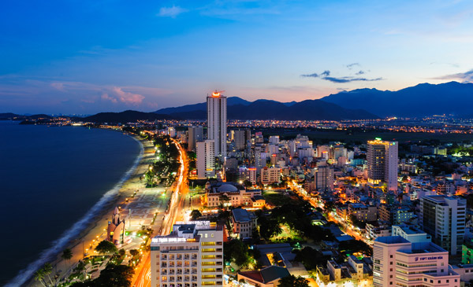
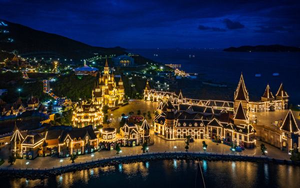
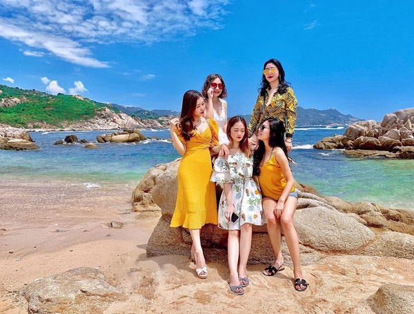

Thiên đường du lịch Nha Trang là một trong những vịnh biển đẹp nhất thế giới. Đến với Nha Trang, du khách sẽ được khám phá những chân trời mới như khu du lịch Vinpearland, kiến trúc Chăm độc đáo … Hoà mình vào bầu không khí trong lành, cùng những bãi biển đẹp diệu kì, vui chơi tại công viên giải trí, tận hưởng dịch vụ tắm bùn, chơi golf … du khách sẽ có những trải nghiệm cực kì thú vị.
Khám phá thiên đường du lịch Nha Trang
Ngoài cảnh quan thiên nhiên trong lành, mát mẻ với những hòn đảo đẹp, hệ sinh thái san hô, Nha Trang còn là vùng đất nổi tiếng của món yến sào Khánh Hoà bổ dưỡng, cao cấp.
Vinpearl Nha Trang qua góc nhìn flycam
Vinpearl Land – địa điểm vui chơi hot nhất Nha Trang bao gồm nhiều khách sạn sang trọng, những khu vườn tuyệt đẹp, khu trò chơi cảm giác mạnh, hồ bơi nước ngọt lý tưởng và những rạp chiếu phim 4D cực hoành tráng.
Vẻ đẹp hoang sơ của đảo Bình Ba (đảo tôm hùm) thu hút giới trẻ